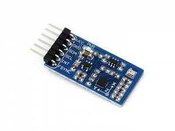

Formula Embedded Wiki
Table of Contents
About
What's the point of this?
The purpose of this project is to provide both real time transmission of sensor data from our formula style electric vehicle and local storage for this data. In addition to collecting the data this project is also meant to filter these data signals, interface to the motor controllers, and provide support for future features such as active aerodynamics, traction control, etc.
Where do I run this?
This software is based around ROS and, is meant to run on an Nvidia Jetson Tx2. In addition to this SOC there are other sensors and boards necessary to communicate with other parts of the system. For a full parts list refer to the internal documention found on the Google Drive.
FAQ
Why ROS?
This is the most commonly asked question we get by other computer science students or engineers. The answer to that question is that it provides an excellent means of inter-process communication so that multiple processes written in different languages can communicate efficiently and reliably. Additionally it's one of the most documented and well supported frameworks that plays well with our hardware platform. Lastly it enables us to reuse software so we can focus on adding features to our system without compromising its reliability.
Why the Nvidia Jetson?
This was chosen with a couple of considerations in mind such as I/O availability, flexibility, and speed. It provides all of the necessary means of communication with our sensors and ECUs found on our electric vehicle.
ROS
ROS Layout

Development Philosophy
We keep a few things in mind when designing and implementing new ROS nodes.
- How maintainable each node will be in the future.
- How reusable each node will be in the future.
Understanding how ROS messages and processes function is essential in making wise design decisions. Most people are quick to think that by eliminating ROS Nodes the system will become more efficent however this isn't always the case. Additionally it's important to keep in mind that a more monolithic system makes each node more difficult to maintain and reduces the reusebility of the software (comp 380?). Therefore when looking to improve the system by either adding additional functionality or making improvements to performance it's important to make sure that each node performs only a single function (e.g. getting data from a single device and publishing its data). The rest of the sections of the wiki will not necessarily describe individual ROS nodes but instead describe parts of the system refrencing ROS nodes along the way that handle that part of the system. NOTE to maintainers: Update the ROS diagram you wont be the only person developing this so keep the next person informed.
Can Bus
CAN Transceiver

SN65HVD230 CAN Board
Two Can Bus transceivers were used on this system. One was used to communicate to the Motor Controller Unit and the other was meant for future expansion.
Wiring
- These transceivers are connected to the Jetson Tx2 using the J21 header.
Can Bus 0
| Device Pin | Jetson Pin |
|---|---|
| 3.3v | (J26 Header) 2 |
| GND | (J26 Header) 11 |
| CANRX | (J26 Header) 5 |
| CANTX | (J26 Header) 7 |
Can Bus 1
| Device Pin | Jetson Pin |
|---|---|
| 3.3v | (J21 Header) 17 |
| GND | (J26 Header) 21 |
| CANRX | (J26 Header) 15 |
| CANTX | (J26 Header) 17 |
J26 Header

Software
The software to support this device is actually split up into two ROS nodes. The
first is located in I2C_IMU and the other is in temp_and_pressure. This Waveshare
device is actually composed to two separate devices the MPU-9255 and the BMP280
which have two separate addresses on the I2C bus. The MPU-9255 is composed of a
gyroscope, accelerometer, and compass. The BMP280 is a pressure/temperature sensor.
IMU
10 DOF IMU

Waveshare 10 DOF IMU (C)
This sensor was chosen as it's directly compatible with the jetson via I2C. It currently is installed on I2C bus 1. This is made up of both the MPU-9255 (gyro, accel, compass) and the BMP280 (pressure sensor).
Wiring
I2C BUS 1
| Device Pin | Jetson Pin |
|---|---|
| 3.3v | (J26 Header) 2 |
| GND | (J26 Header) 11 |
| CANRX | (J26 Header) 5 |
| CANTX | (J26 Header) 7 |
Software
Analog Sensors
Analog to Digital Converter

NCD 16 Analog to Digital Converter
Digital Sensors
4G LTE
4G Modem

Sierra Wireless MC7455
License
The MIT License (MIT)
Copyright (c) 2019 CSUN Formula SAE
Permission is hereby granted, free of charge, to any person obtaining a copy of this software and associated documentation files (the "Software"), to deal in the Software without restriction, including without limitation the rights to use, copy, modify, merge, publish, distribute, sublicense, and/or sell copies of the Software, and to permit persons to whom the Software is furnished to do so, subject to the following conditions:
The above copyright notice and this permission notice shall be included in all copies or substantial portions of the Software.
THE SOFTWARE IS PROVIDED "AS IS", WITHOUT WARRANTY OF ANY KIND, EXPRESS OR IMPLIED, INCLUDING BUT NOT LIMITED TO THE WARRANTIES OF MERCHANTABILITY, FITNESS FOR A PARTICULAR PURPOSE AND NONINFRINGEMENT. IN NO EVENT SHALL THE AUTHORS OR COPYRIGHT HOLDERS BE LIABLE FOR ANY CLAIM, DAMAGES OR OTHER LIABILITY, WHETHER IN AN ACTION OF CONTRACT, TORT OR OTHERWISE, ARISING FROM, OUT OF OR IN CONNECTION WITH THE SOFTWARE OR THE USE OR OTHER DEALINGS IN THE SOFTWARE.